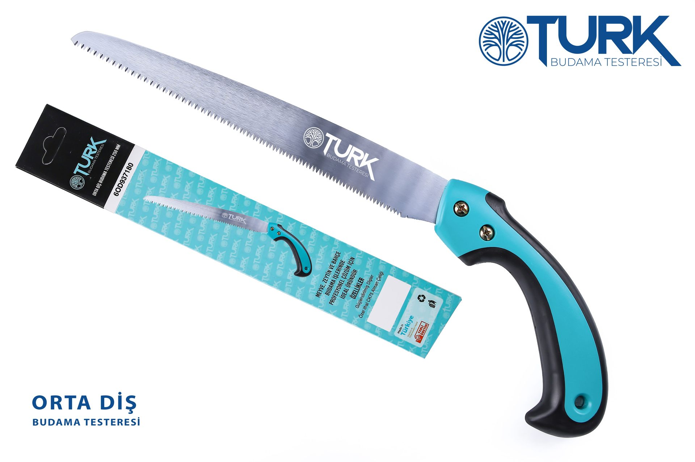
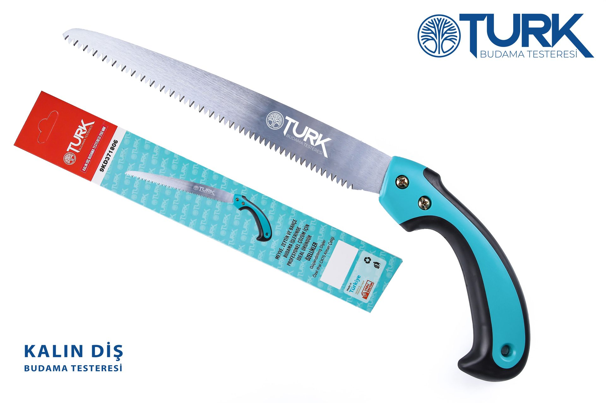
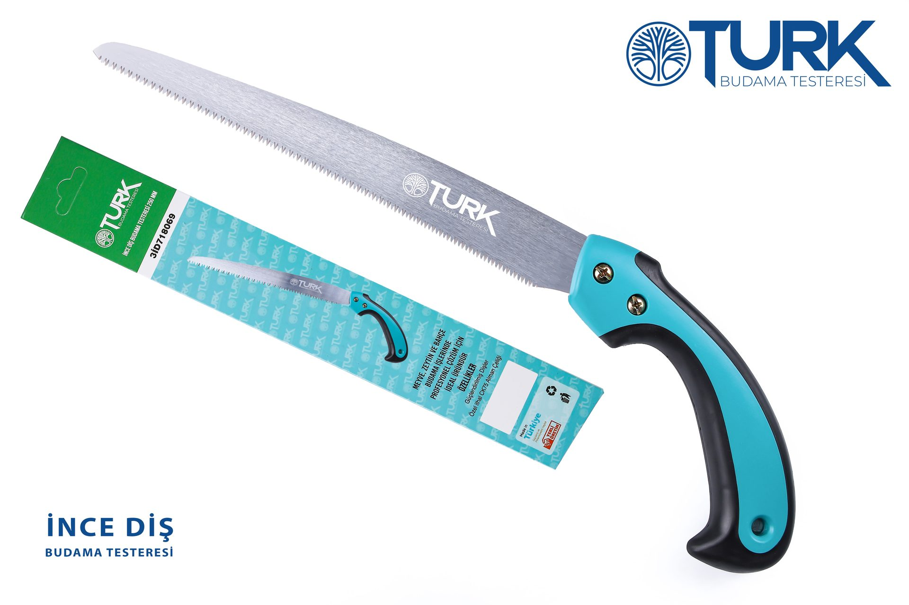
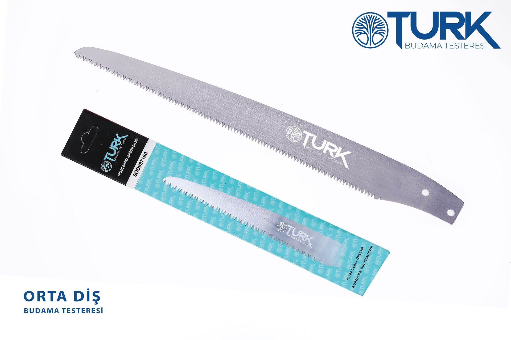

Yan Kesim Yüzeyleri
Dişin yan yüzeyleri talaş tahliyesini hızlandırır, kesim sırasında sıkışmayı önler.

Orta Diş
Orta diş yapısı, ince dalın inceliğiyle kalın dalın hızını birleştirir. Meyve ağacından bağ tellerine kadar her budamada güvenle kullanılır — bu yüzden en çok tercih edilen modelimiz.

Kalın Diş
Geniş diş aralığı ve darbe sertleştirilmiş diş uçları, kalın gövdelere ilk vuruşta tutunur. Zeytin gövdesinde uzun mesai gerektiğinde bilek yormadan, hızla kestirir.

İnce Diş
Sıkı diş yapısı, ince dallarda temiz ve doku yırtmayan iz bırakır. Şekil budaması ve filiz alma için bahçe ustasının ilk seçimi.

Teknoloji
Üç sıralı diş geometrisi (yan kesim yüzeyleri, darbe sertleştirilmiş diş uçları, üç yönlü taşlama) OTURK'u sıradan testereden ayıran detay. Diş ucunda darbe sertleştirme sayesinde keskinlik, bilemeden saatlerce dayanır.

Dişin yan yüzeyleri talaş tahliyesini hızlandırır, kesim sırasında sıkışmayı önler.
Diş ucunda mikro yapı sertleştirme. Reçineli ahşapta dahi keskinlik korunur.
Üç yönlü taşlama her vuruşta üç kesme yüzeyini devreye sokar.
Yüksek karbonlu, sertleştirilebilir çelik. Aşınmaya karşı uzun ömür, esneklik kaybı yok.
İmza turkuaz tutaç, parmak yuvalarıyla şekillendirilmiştir. Uzun mesai sonunda dahi kayma minimumda.
İnce, orta ve kalın diş — her budama görevi için doğru testereyi sunar.
Yerli üretim sayesinde uygun fiyat, hızlı yedek parça ve servis erişimi.
Üç model, tek 250 mm standardı. Doğru testereyi seç.

Hızlı kesim — kalın gövde ve dal.

Çok yönlü — meyve ve bağ budaması.

Hassas — ince dal ve şekil budama.
Hakkımızda
OTURK, tamamen yerli sermaye ile Bursa'da kurulmuş bir budama testeresi üreticisidir. Üretim tesisimiz, Osmangazi ilçesi Gülbahçe Mahallesi'nde yer almaktadır. Her testereyi profesyonel ve hobi kullanıcılarımızın gerçek saha geri bildirimleriyle geliştiririz.
İletişim